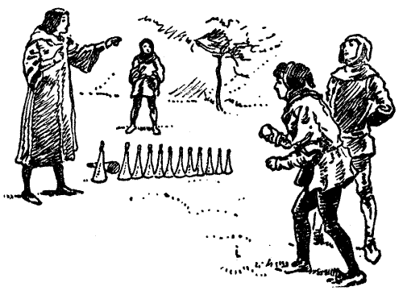

My Work
RECENT
See More on my Linkedin
MxM Madison Experimental Mathematics Lab
Kayles is a simple impartial game played with rows of pins. Each player, on his or her turn, may remove either any one pin, or two adjacent pins. This game is periodic, which can be shown only after computations, which we will provide.
On the second part we will extend our tools to the game on some graphs’ families. If we think of the classical rows of pins as path graphs, then we can have game on stars, caterpillars, general trees, etc.
Learn More on MxM Website
Rayne Lab @Soil and Environmental Sciences

- Using WordPress, help with Lab website building
- Designing Lab Logo
- Taking field photos with lab members
A VR Meditation Project
My Skills
| Programming Languages | Python, Java, RStudio, MATLAB, HTML |
| Web Development | UI/UX, Web Design, Graphic Design, WordPress |